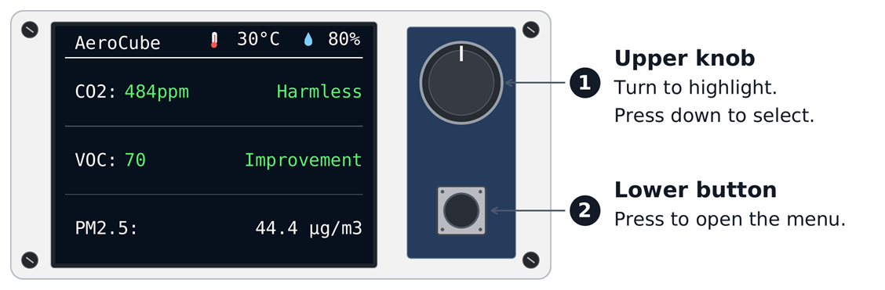
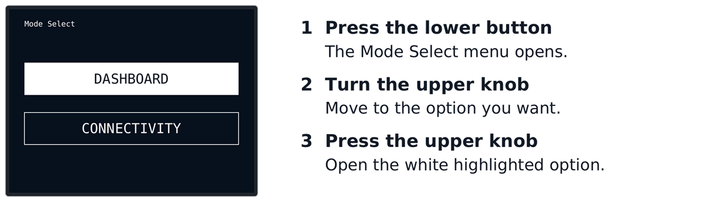
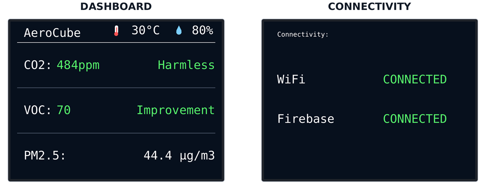
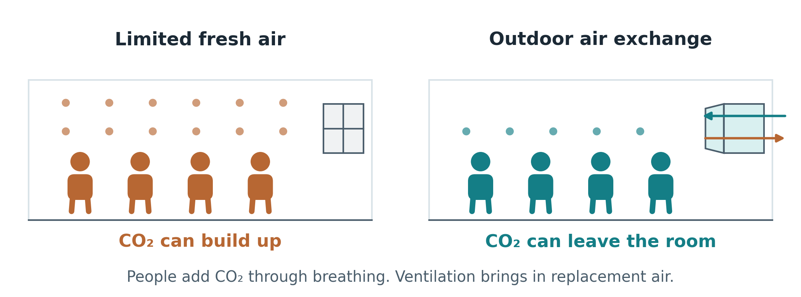
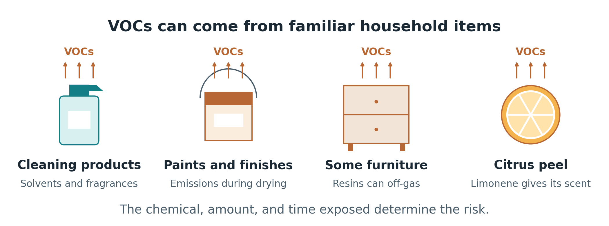
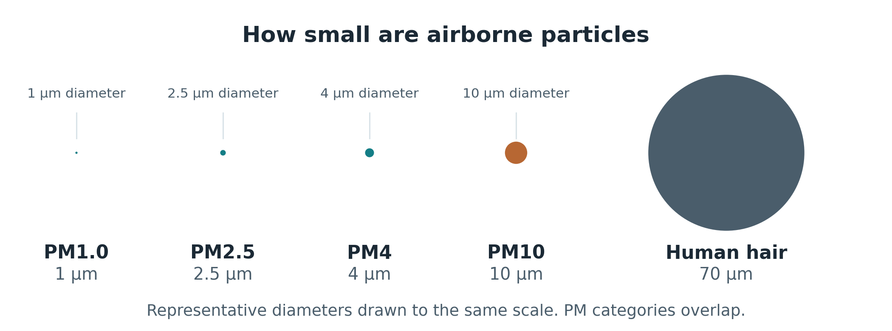

AeroCube Guide
Learn how to use AeroCube and understand your indoor air readings.
Getting Started
Place your device well, understand what it measures, and use the readings to make practical changes.
Place AeroCube in the breathing zone, 1–2 meters above the ground, with normal air circulation and unobstructed sensor openings.
CO₂ reflects ventilation, VOC Index reflects changing chemical pollution, and the SPS30 measures airborne particles.
Use AeroPlug and configured thresholds to respond automatically, or switch to manual mode when you need direct control.
Where should AeroCube be placed?
Place AeroCube in the breathing zone, 1–2 meters above the ground, in an occupied area with normal air circulation. Keep it away from direct windows, doors, fans, air-conditioning vents, cooking sources, and other locations that could cause unusually localized readings. Keep the sensor openings unobstructed.
AeroCube TFT Dashboard Guide
Use the controls beside the display to view air readings and check connectivity. The dashboard opens automatically after startup.
Button controls

Press and release the lower button to open Mode Select. Turn the upper knob slowly to highlight an option, then press it straight down to open that screen. Use short presses.
Open a screen

The option filled in white is selected. DASHBOARD shows sensor readings; CONNECTIVITY shows WiFi and Firebase status. To return to the dashboard, open the menu, highlight DASHBOARD and press the knob.
Read the dashboard

The top row shows temperature (°C) and humidity (%). Below are CO₂ (ppm), VOC Index and PM2.5 (µg/m³). CO₂ and VOC use colored status labels; PM2.5 displays a numeric reading in white. See the CO₂ and VOC Index ranges below.
Check connectivity
Open CONNECTIVITY to check WiFi (network) and Firebase (cloud). Green CONNECTED means the link is ready; red DISCONNECTED means it is unavailable. Reopen this screen to refresh the status. If a link stays disconnected, check the WiFi and internet connection.
Screen messages
Waiting or --: no usable reading yet; allow time for startup. No data: readings stopped updating or are invalid. Cleaning: the PM sensor is cleaning; its reading returns afterward.
Use the web dashboard for appliance controls and Settings for automation. The physical controls switch TFT screens.
Quick Indoor Air Tips
Simple actions that can improve indoor air conditions.
Open windows or use mechanical ventilation when CO₂ rises.
Limit smoke, strong fragrances, aerosols, and harsh cleaning products.
Reduce dust, smoke, cooking emissions, and other sources when PM2.5 is elevated.
Indoor Air Quality Guide
A quick guide to indoor air and dashboard readings.
AeroCube helps us keep track of the air indoors. This guide explains where common pollutants come from, what the dashboard readings mean, and simple ways to reduce exposure.
CO₂: Fresh air

What is CO₂?
Carbon dioxide, or CO₂, is a colorless, odorless gas. Our bodies produce it while using energy, and we breathe it out. People are often its main indoor source. Fuel-burning appliances can also add CO₂.
Why it builds up
Imagine a classroom full of students with the windows closed. Everyone keeps breathing out CO₂, so it can build up when fresh air is limited. A sensor helps us notice when ventilation may not be keeping up.
SCD41 readings
CO₂ is measured in parts per million (ppm). The CO₂ reference ranges below are based on the German Environment Agency’s (Umweltbundesamt, UBA) hygienic guide values for indoor carbon dioxide. The SCD41 also measures temperature and humidity, which are displayed as environmental readings..
| Reading | Status | What it means |
|---|---|---|
| CO₂ < 1,000 ppm | Harmless | Within this CO₂ reference range. Keep normal ventilation. |
| CO₂ 1,000–2,000 ppm, inclusive | Elevated | CO₂ is building up. Check and improve ventilation. |
| CO₂ > 2,000 ppm | Unacceptable | Ventilation needs prompt attention. |
| Temperature (°C) — | Environmental reading | Shows the measured temperature in degrees Celsius. |
| Humidity (%) — | Environmental reading | Shows relative humidity: how moist the air is. |
“Harmless” is a label for this CO₂ range, not a guarantee that the room has no other pollutants. Temperature and humidity provide environmental context; this guide does not assign them status limits.
Bring in fresh air
When CO₂ rises, open windows or doors if outdoor air is clean, or use an exhaust fan that vents outdoors. Fresh replacement air needs a way to enter. Keep normal ventilation when readings are low.
Health effects
Studies have linked elevated indoor CO₂ with tiredness, headaches, and trouble concentrating, but CO₂ alone may not explain these effects. Very high concentrations can cause breathing difficulty, unconsciousness, or death.
Quick fact
A cool room can still need fresh air. Many home air conditioners recirculate indoor air. A circulating fan or ordinary HEPA purifier does not remove CO₂.
CO₂ vs. CO
Carbon monoxide, or CO, is a different gas. A CO₂ sensor does not replace a CO alarm. Never burn charcoal inside a home.
VOCs: Everyday gases

What are VOCs?
Volatile organic compounds, or VOCs, are carbon-containing chemicals that enter the air as gases. Many create familiar smells, but some are odorless. Their health effects depend on the chemical, amount, and length of exposure.
Common sources
Paints, cleaners, sprays, air fresheners, glues, markers, and cosmetics can release VOCs. Some furniture also releases gases from its materials. This is called off-gassing, and it can continue even while an item sits unused.
Useful and harmful VOCs
Not all VOCs have the same risks. Limonene gives citrus peel its scent, while ethanol helps alcohol-based hand sanitizers reduce germs. These are useful VOCs, but their vapors are not harmless at every exposure.
Benzene from gasoline or tobacco smoke and formaldehyde from some pressed-wood products are examples of hazardous VOCs. Both can increase cancer risk. How much we inhale and how long we are exposed matter.
Why they build up
Cleaning, painting, or using scented products can release vapors faster than ventilation removes them. A sensor can help spot changes during these activities, giving us a reason to check for a possible source.
SGP40 readings
The VOC Index compares current VOC activity with the sensor’s adaptive baseline, based on roughly the previous 24 hours. It describes a change relative to recent conditions.
| Reading | Status | What it means |
|---|---|---|
| VOC Index 1–99 | Improvement | Lower VOC activity than the recent baseline. |
| VOC Index 100 | Baseline | Typical VOC activity for the sensor’s recent history. |
| VOC Index 101–500 | Deterioration | Higher VOC activity than the recent baseline. Check possible sources. |
The index has no concentration unit. It does not identify individual chemicals or measure their toxicity. A reading of 100 means baseline, not proof that the air is healthy.
Reduce the source
If the index rises, check recent activities. Reduce unnecessary sprays or fragrances, close product containers, and ventilate with clean outdoor air or suitable exhaust ventilation. Keep monitoring even when the index shows Improvement or Baseline.
HEPA filters capture particles. VOC gases need a suitable gas-removal filter, such as one with substantial activated carbon. How well it works depends on the chemical, filter material, and maintenance.
Health effects
Some VOCs can irritate the eyes, nose, or throat and cause headaches, dizziness, or nausea. Certain chemicals can damage organs or increase cancer risk. A general VOC Index cannot predict a specific health effect.
Quick fact
A pleasant scent does not guarantee cleaner air. Researchers have observed cleaning vapors reacting with indoor ozone to form new tiny particles.
PM: Airborne particles

What is PM?
Particulate matter, or PM, includes solid particles and liquid droplets floating in air, such as dust, soot, and smoke particles. Many are too small to see. Readings in µg/m³ mean micrograms of particles per cubic meter of air.
Particle sizes
PM1.0 includes particles about 1 micrometer or smaller; PM2.5, 2.5 or smaller; PM4.0, 4 or smaller; and PM10.0, 10 or smaller. These groups overlap: particles in PM1.0 are also included in the larger size groups.
Soot and cooking aerosols can include particles smaller than 1 micrometer. Fine smoke contributes to PM2.5. Larger dust fragments can fall within PM4.0 or PM10.0. These names describe size, not what a particle is made of.
Common sources
Cooking, smoking, candles, charcoal or uling, and stirred-up dust can raise indoor PM. Traffic pollution and outdoor smoke can also enter through windows and gaps. A sensor helps us spot these changes, including particles we cannot see.
How long they stay
Some particles can stay suspended in the atmosphere for days to weeks. Indoors, their time in the air depends on size, ventilation, filtration, and settling. Clear-looking air can still contain particles after visible smoke disappears.
Health effects
Fine particles can reach deep into the lungs, and some may enter the bloodstream. Exposure can worsen asthma and contribute to heart and lung problems. Children, older adults, and people with existing heart or lung disease are more vulnerable.
SPS30 readings
Live readings show particle levels now. The 24-hour PM2.5 average gives a longer view and is the reading to compare with the World Health Organization’s air quality guideline, or AQG.
| Reading | Status | What it means |
|---|---|---|
| PM1.0, PM2.5, PM4.0, PM10.0 Live concentration | See dashboard | Shows current particle levels. Watch for spikes from smoke, cooking, or dust. |
| 24-hour PM2.5 average ≤ 15 µg/m³ | Within WHO 24-hour AQG | The daily average meets this WHO reference. Keep reducing avoidable sources. |
| 24-hour PM2.5 average > 15 µg/m³ | Above WHO 24-hour AQG | The daily average is above this reference. Reduce sources and use suitable filtration. |
The 15 µg/m³ guideline applies to a 24-hour average, not a single live reading. We can still respond to sudden spikes right away. Lower particle exposure is better, even when the daily average is within the guideline.
Cut smoke and dust
Check cooking smoke, dust, or burning sources when levels rise. Reduce avoidable emissions and use a kitchen exhaust that vents outdoors. A properly sized HEPA purifier helps remove particles. Damp wiping and mopping help keep dust from being stirred up.
Keep these habits and maintain filters when readings are lower. If outdoor smoke or traffic pollution is high, limit its entry and use filtration. Ventilate with cleaner outdoor air when conditions improve.
Quick fact
A typical human hair is about 70 micrometers wide. A 2.5-micrometer particle is roughly 30 times smaller in diameter.
Using the guide
Start by checking what changed in the room, then take action and watch the trend. Fresh air helps reduce CO₂, source control and suitable gas filters help with VOCs, and HEPA filtration helps with PM.
Research sources
Reference ranges and status labels follow the project’s sensor guide. Scientific sources checked on 12 and 13 October 2026. The illustrations are original explanatory graphics.
[1] US EPA Protect Indoor Air Quality in Your Home
[2] ASHRAE Position Document on Indoor Carbon Dioxide 2025
[4] CDC NIOSH Pocket Guide to Chemical Hazards Carbon Dioxide
[5] UK HSE Assessment of the Major Hazard Potential of Carbon Dioxide
[6] US EPA Improving Indoor Air Quality
[7] CDC Carbon Monoxide Poisoning Basics
[8] US EPA Volatile Organic Compounds Impact on Indoor Air Quality
[11] US EPA What Are Volatile Organic Compounds
[12] National Cancer Institute Formaldehyde and Cancer Risk
[13] CDC Benzene
[14] Sensirion What Is Sensirion VOC Index
[15] US EPA Guide to Air Cleaners in the Home
[17] US EPA Particulate Matter Basics
[18] US EPA What Is Particle Pollution
[19] Sensirion Particulate Matter Sensing for Air Quality Measurements
[20] US EPA Indoor Particulate Matter
[21] WHO Household Air Pollution
[22] US EPA Health and Environmental Effects of Particulate Matter
[23] US EPA Sources of Indoor Particulate Matter
[24] Health Canada Residential Indoor Air Quality Guidelines for Carbon Dioxide